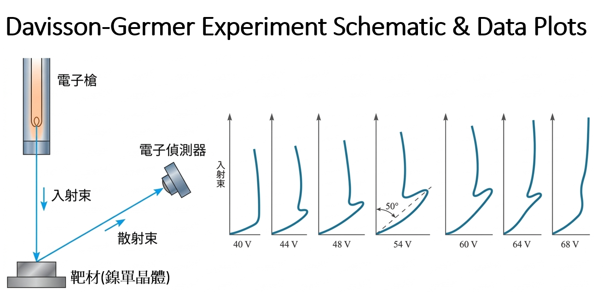
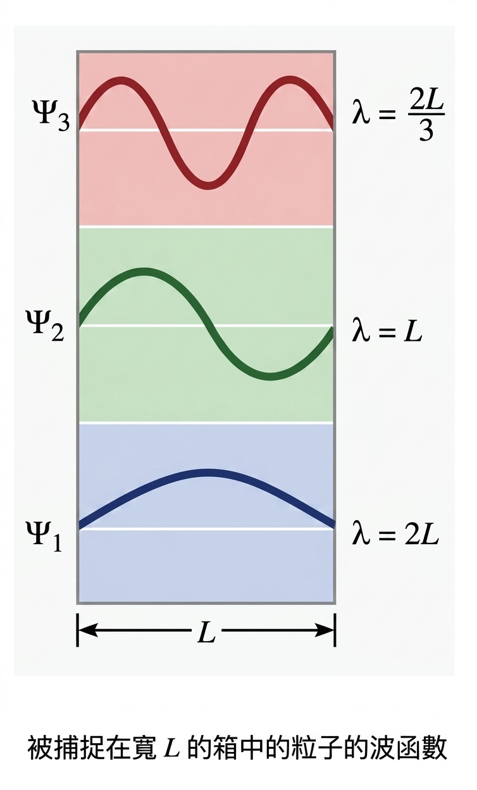
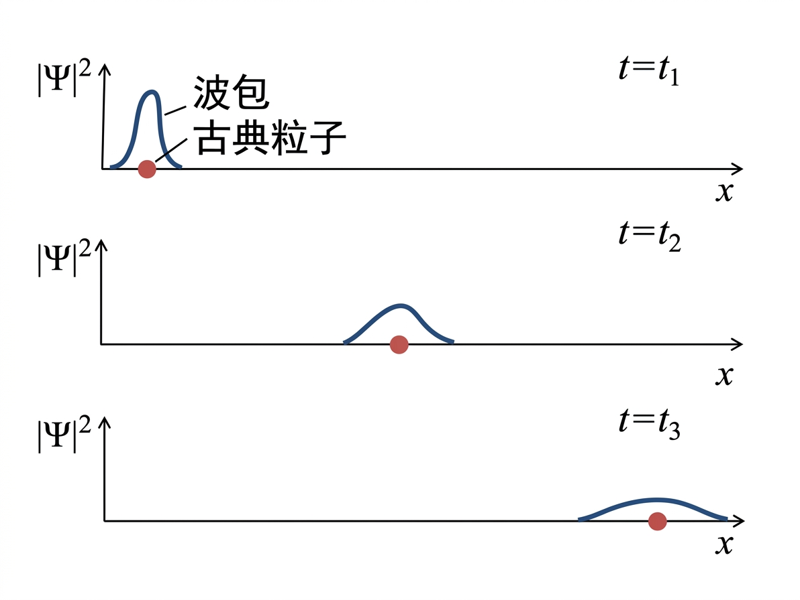

近代物理學 - 粒子的波特性 (Modern Physics - Wave Properties of Particles)#
日期: 2026.03.24
3.1 德布羅依波 (De Broglie Wave)#
1924年，德布羅依 (Louis de Broglie) 提出了一個大膽的假說：既然光（電磁波）具有粒子性（光子），那麼所有具備質量的物質（如電子、原子等）也應該具有波動性。這稱為物質波 (Matter wave)，是波粒二象性的完美對稱。
物體的波長 \(\lambda\) 與其動量 \(p\) 之間的關係由以下公式給出：
\(\lambda\) : 德布羅依波長 (de Broglie wavelength) \([\text{m}]\)
\(h\) : 普朗克常數 (Planck’s constant) \(h \approx 6.626 \times 10^{-34} \text{ J}\cdot\text{s} \)
\(p\) : 物體動量 (Momentum) \([\text{kg}\cdot\text{m}\cdot\text{s}^{-1}]\)
光子與粒子的動量#
1. 光子 (Photon)
物體的能量與動量關係式 \(E^2 = (m_0 c^2)^2 + (pc)^2 \quad (1.8)\)
光子沒有靜止質量 (\(m_0 = 0\))
若光子的頻率為 \(\nu\)，根據愛因斯坦的光量子假說，其能量為 \(E = h\nu\)
\(c=\nu \lambda\)
這與德布羅依公式 \(\lambda = \frac{h}{p}\) 完全吻合。
2. 粒子 (Particle)
物體的能量與動量關係式 \(E^2 = (m_0 c^2)^2 + (pc)^2 \quad (1.8)\)
有靜止質量 \(m_0\) 的粒子
運動速度為 \(v\)，若 \(v\) 接近光速 \(c\) 則需考慮相對論效應 \(p = \gamma m_0 v\)
物體總能量 (Total Energy)：\(E = \gamma m_0 c^2 \)
\(1\text{eV} = 1.6\times 10^{-19} \text{J}\)
\(\gamma\) : 勞侖茲因子 (Lorentz factor)
\(v\) : 物體速度 (Velocity)，\([\text{m}\cdot\text{s}^{-1}]\)
\(m_0\) : 物體靜止質量 (Rest mass)，\([\text{kg}]\)
\(c\) : 真空中光速 (Speed of light)，\(c \approx 3 \times 10^8 \text{ m}\cdot\text{s}^{-1}\)
\(E_0\) : 靜止能量 (Rest Energy) \(E_0 = m_0 c^2\) \([\text{J}]\)
\(KE\) : 動能 (Kinetic Energy)， \([\text{J}]\)
例題 3.1(a) 巨觀物體：高爾夫球#
題目： 求出質量 \(46 \text{ g}\) 且速度為 \(30 \text{ m/s}\) 的高爾夫球的德布羅依波長
高爾夫球速度遠小於光速 \(\gamma \approx 1\)
物理解釋： \(10^{-34} \text{ m}\) 是一個小到無法想像的尺度（質子直徑約為 \(10^{-15} \text{ m}\)）。因為波長遠小於任何可測量或發生繞射的狹縫尺寸，故我們無法觀察到高爾夫球的波動行為。日常生活中感受不到物質波
思想實驗探討： 若把高爾夫球切成一半 (\(23 \text{ g}\))，以同速度丟出，波長會變為 \(9.6 \times 10^{-34} \text{ m}\)。若切的足夠小是不是就可以觀察到物質波了?
例題 3.1(b) 微觀粒子：電子#
題目： 計算以速度 \(10^7 \text{ m/s}\) 運動之電子的德布羅依波長，電子靜止質量 \(m_e = 9.11 \times 10^{-31} \text{ kg}\)
\(v = 10^7 \text{ m/s}\approx 0.033c\) 所以 \(\gamma \approx 1\)
物理解釋： \(7.3 \times 10^{-11} \text{ m}\) 大約是 \(0.073 \text{ nm}\)，相當於氫原子的波耳半徑約為 \(0.053 \text{ nm}\)。當電子的波長與原子尺寸相當甚至更大時，電子的波動特性就會與原子結構產生強烈的交互作用（例如干涉、繞射），這就是為什麼古典物理無法解釋原子內部運作，必須引入量子力學。
例題 3.1(c) 質子的相對論性能量與動量#
題目： 德布羅依波長為 \(1 \text{ fm}\) (\(1 \times 10^{-15} \text{ m}\)) 的質子，此波長大約為質子的直徑，請計算其動能，質子靜止質量 \(E_0 = m_p c^2 \approx 938 \text{ MeV}\)
物理解釋： 當我們想要探測原子核內部的結構（尺度約 \(1 \text{ fm}\)）時，探測粒子（如質子或電子）的波長必須小於或等於這個尺度才能發生有效的交互作用 (interaction)。由計算可知，這需要高達數百 \(\text{MeV}\) 的動能，這也是為什麼研究核物理需要「高能粒子加速器」。
什麼波？機率波 (Probability Wave)#
在古典物理中，波都有具體的物理量在震盪（水波是高度，聲波是壓力，光波是電磁場）。那物質波是什麼在震盪？ 物理學家 Max Born 提出了機率幅 (Probability Amplitude) 的解釋：
波函數 (Wave function) \(\Psi(x,y,z,t)\)：代表物質波的振幅（本身為複數，無直接物理意義）。
機率密度 (Probability density) \(|\Psi(x,y,z,t)|^2\)：代表在時間 \(t\)、空間座標 \((x,y,z)\) 處找到該粒子的機率。
“Life can be understood backwards, but must be lived forwards.” —— 呼應了量子力學中，對於尚未測量的未來，粒子存在於各種狀態的機率疊加中；一旦測量（時間過去），波函數塌縮，結果才成為確定的事實。
3.2 描述波 (Describing a Wave)#
數學定義#
角頻率 \(\omega \overset{\text{def}}{=} 2\pi \nu\)
波數 \(k \overset{\text{def}}{=} \frac{2\pi}{\lambda} = \frac{\omega}{v_p}\)
一個向 \(+x\) 方向傳播的簡諧波一般表達式為：
\[\begin{split}\begin{gather*} y(x,t) &=& A\cos\left(2\pi \nu \left(t - \frac{x}{v_p}\right)\right)\\ y(x,t) &=& A\cos(\omega t - kx) \end{gather*}\end{split}\]
德布羅依相速度 (Phase Velocity)#
【定義 1】 德布羅依波 (De Broglie Wave) ：
\[\lambda \overset{\text{def}}{=} \frac{h}{p}\]\(\lambda\) : 德布羅依波長 (de Broglie wavelength) \([\text{m}]\)
\(h\) : 普朗克常數 (Planck’s constant) \(h \approx 6.626 \times 10^{-34} \text{ J}\cdot\text{s} \)
\(p\) : 物體動量 (Momentum) \([\text{kg}\cdot\text{m}\cdot\text{s}^{-1}]\)
【定義 2】 愛因斯坦的光量子假說 ：
\[E \overset{\text{def}}{=} h\nu\]\(E\) : 總能量 (Total Energy) \([\text{J}]\)
\(h\) : 普朗克常數 (Planck’s constant) \(h \approx 6.626 \times 10^{-34} \text{ J}\cdot\text{s} \)
\(\nu\) : 光子的頻率 \([\text{s}^{-1}]\)
【已知 1】 總能量 (Total Energy) ：
\[E = \gamma m_0 c^2\]\(E\) : 總能量 (Total Energy) \([\text{J}]\)
\(\gamma\) : 勞侖茲因子 (Lorentz factor)
\(m_0\) : 物體靜止質量 (Rest mass)，\([\text{kg}]\)
\(c\) : 真空中光速 (Speed of light)，\(c \approx 3 \times 10^8 \text{ m}\cdot\text{s}^{-1}\)
【已知 2】 相對論動量 (Relativistic Momentum) ：
\[p = \gamma m_0 v \]\(p\) : 物體動量 (Momentum) \([\text{kg}\cdot\text{m}\cdot\text{s}^{-1}]\)
\(\gamma\) : 勞侖茲因子 (Lorentz factor)
\(m_0\) : 物體靜止質量 (Rest mass)，\([\text{kg}]\)
\(v\) : 物體速度 (Velocity)，\([\text{m}\cdot\text{s}^{-1}]\)
證明#
單一頻率波浪的「波峰」前進的速度稱為相速度 \(v_p\)
相速度超越光速 (\(v_p > c\)) 違反相對論嗎？
相對論說「攜帶能量或資訊的物體速度不能超過 \(c\)」。
相速度 \(v_p\) 只是數學上「純粹正弦波波峰」移動的速率。 一個從 \(-\infty\) 到 \(+\infty\) 完美重複的正弦波，是處處存在的，它沒有開頭也沒有結尾，因此無法用來傳遞任何資訊
3.3 相速度與群速度 (Phase and Group Velocities)#
真正的粒子（如電子）存在於局部的空間中，而不是像純粹正弦波那樣延伸到無限遠。因此，粒子必須被描述為一個波包 (Wave packet) 或波群 (Wave group)，這是由許多不同頻率、不同波數的波疊加而成的。群速度的本質，就是當兩個（或多個）頻率相近的波疊加時，它們產生的「干涉包絡線」的移動速度
節拍 (Beat) 與波群速度推導#
【假設 1】 假設有兩個振幅相同、但頻率和波數略有差異的波 ：
\[\begin{split}\begin{gather*} y_1 &=& A\cos(\omega t - kx)\\ y_2 &=& A\cos[(\omega + \Delta \omega)t - (k + \Delta k)x] \end{gather*}\end{split}\]【已知 1】 和差化積 ：
\[\cos \alpha + \cos \beta = 2 \cos \left(\frac{\alpha + \beta}{2}\right) \cos \left(\frac{\alpha - \beta}{2}\right)\]\(y_1\) 的括號內視為 \(\beta\)
\(y_2\) 的括號內視為 \(\alpha\)
\(\alpha + \beta = (2\omega + \Delta \omega)t - (2k + \Delta k)x\)
\(\alpha - \beta = \Delta \omega t - \Delta k x\)
【已知 2】 近似 ：
\[2\omega + \Delta \omega \approx 2\omega\]\(\Delta \omega \ll \omega\)
\(\Delta k \ll k\)
兩個波疊加的表現：
物理意義：
後面的 \(\cos(\omega t - kx)\) 是原本的高頻波，它的移動速度是相速度 \(v_p = \frac{\omega}{k}\)。
前面的 \(2A \cos \left( \frac{\Delta \omega}{2} t - \frac{\Delta k}{2} x \right)\) 形成了一個巨大的「封包」（包絡線），這個封包就是粒子的實體，這個封包移動的速度就是 群速度 ，從括號內的相位可知，群速度為：
證明：物質波的群速度等於粒子真實速度 (\(v_g = v\))#
【定義 1】 數學上波的關鍵變數 ：
角頻率 \(\omega \overset{\text{def}}{=} 2\pi \nu\)
波數 \(k \overset{\text{def}}{=} \frac{2\pi}{\lambda} = \frac{\omega}{v_p}\)
【定義 2】 群波 ：
\[v_g \overset{\text{def}}{=} \frac{d\omega}{dk}\]【已知 1】 愛因斯坦的光量子假說 ：
\[\begin{split}\begin{gather*} E &\overset{\text{def}}{=}& h\nu \\ E &\overset{\text{定義 1}}{=}& h\frac{\omega}{2\pi} \\ \frac{ 2\pi E}{h} &=& \omega \\ \end{gather*}\end{split}\]\(E\) : 總能量 (Total Energy) \([\text{J}]\)
\(h\) : 普朗克常數 (Planck’s constant) \(h \approx 6.626 \times 10^{-34} \text{ J}\cdot\text{s} \)
\(\nu\) : 光子的頻率 \([\text{s}^{-1}]\)
【已知 2】 德布羅依波 (De Broglie Wave) ：
\[\begin{split}\begin{gather*} \lambda &\overset{\text{def}}{=}& \frac{h}{p}\\ frac{2\pi}{k} &\overset{\text{定義 1}}{=}& \frac{h}{p}\\ k &=& \frac{2\pi p}{h}\\ \end{gather*}\end{split}\]\(\lambda\) : 德布羅依波長 (de Broglie wavelength) \([\text{m}]\)
\(h\) : 普朗克常數 (Planck’s constant) \(h \approx 6.626 \times 10^{-34} \text{ J}\cdot\text{s} \)
\(p\) : 物體動量 (Momentum) \([\text{kg}\cdot\text{m}\cdot\text{s}^{-1}]\)
【已知 3】 總能量 (Total Energy) ：
\[E = \gamma m_0 c^2\]\(E\) : 總能量 (Total Energy) \([\text{J}]\)
\(\gamma\) : 勞侖茲因子 (Lorentz factor)
\(m_0\) : 物體靜止質量 (Rest mass)，\([\text{kg}]\)
\(c\) : 真空中光速 (Speed of light)，\(c \approx 3 \times 10^8 \text{ m}\cdot\text{s}^{-1}\)
【已知 4】 相對論動量 (Relativistic Momentum) ：
\[p = \gamma m_0 v \]\(p\) : 物體動量 (Momentum) \([\text{kg}\cdot\text{m}\cdot\text{s}^{-1}]\)
\(\gamma\) : 勞侖茲因子 (Lorentz factor)
\(m_0\) : 物體靜止質量 (Rest mass)，\([\text{kg}]\)
\(v\) : 物體速度 (Velocity)，\([\text{m}\cdot\text{s}^{-1}]\)
proof
結論：
波包整體的移動速度（群速度）完美對應了粒子在巨觀世界中被測量到的運動速度 \(v\)
且由先前可知 \(v_p = c^2/v\)，故有優美的關係式：\(v_p \cdot v_g = c^2\)
例題 3.3 電子的相速度與群速度#
題目： 一個電子的德布羅依波長為 \(2 \text{ pm} = 2.00 \times 10^{-12} \text{ m}\)，電子的靜止能量為 \(E_0 = m_e c^2 \approx 511 \text{ keV}\) ，求出其動能 \(KE\) 和德布羅依波的相速度 \(v_{\text{p}}\) 與群速度 \(v_{\text{g}}\)
已知與假設#
【定義 1】 動能：
\[E = KE + E_0 \]\(E\) : 總能量 (Total Energy)，\([\text{J}]\)
\(KE\) : 動能 (Kinetic Energy)，\([\text{J}]\)
\(E_0\) : 靜止能量 (Rest Energy) \(E_0 = m_0c^2\) ，\([\text{J}]\)
【已知 1】 物體的能量與動量關係式：
\[E^2 = (m_0 c^2)^2 + (pc)^2 \]\(E\) : 總能量 (Total Energy) \([\text{J}]\)
\(m_0\) : 物體靜止質量 (Rest mass)，\([\text{kg}]\)
\(c\) : 真空中光速 (Speed of light)，\(c \approx 3 \times 10^8 \text{ m}\cdot\text{s}^{-1}\)
\(p\) : 物體動量 ，\([\text{kg}\cdot\text{m}\cdot\text{s}^{-1}]\)
【已知 2】 德布羅依波 (De Broglie Wave) ：
\[\begin{split}\begin{gather*} \lambda &\overset{\text{def}}{=}& \frac{h}{p}\\ frac{2\pi}{k} &\overset{\text{定義 1}}{=}& \frac{h}{p}\\ k &=& \frac{2\pi p}{h}\\ \end{gather*}\end{split}\]\(\lambda\) : 德布羅依波長 (de Broglie wavelength) \([\text{m}]\)
\(h\) : 普朗克常數 (Planck’s constant) \(h \approx 6.626 \times 10^{-34} \text{ J}\cdot\text{s} \)
\(p\) : 物體動量 (Momentum) \([\text{kg}\cdot\text{m}\cdot\text{s}^{-1}]\)
【已知 3】 總能能：
\[E = \gamma m_0 c^2 \]\(E\) : 總能量 (Total Energy)，\([\text{J}]\)
\(\gamma\) : 勞侖茲因子 (Lorentz factor)
\(m_0\) : 物體靜止質量 (Rest mass)，\([\text{kg}]\)
\(c\) : 真空中光速 (Speed of light)，\(c \approx 3 \times 10^8 \text{ m}\cdot\text{s}^{-1}\)
(a) 計算電子的 \(KE\)
(b) 計算速度
群速度 (粒子實際速度)： \(v_g = v = 0.771c\)
相速度 (波峰虛擬速度)： \(v_p = \frac{c^2}{v} = \frac{c^2}{0.771c} \approx 1.30c\)
3.4 粒子繞射 (Particle Diffraction)#
在德布羅依提出物質波假說的三後（1927年），美國的戴文生 (Clinton Davisson)、基瑪 (Lester Germer) 和英國的湯姆森 (G.P. Thomson) 透過實驗無意間證實了這個理論。他們因此獲得了諾貝爾物理學獎。
古典與量子的預測差異#
如果把電子當作純粹的「粒子」（像是一顆微小的彈珠）打在鎳 (Nickel) 晶體表面上：
古典物理的預測： 電子撞擊到凹凸不平的原子陣列後，會像彈珠打到石頭路一樣，產生漫射 (Diffuse scattering)，隨機反彈到各個方向。散射強度應該只跟角度有一點點關係，且與電子的能量（速度）無關。
實驗的真實結果： 散射出來的電子並沒有均勻分佈，而是在特定的角度出現了「強度極大值」。這種特定的強度分佈，與 X 射線（電磁波）打在晶體上產生的繞射圖樣 (Diffraction pattern) 完全一樣！

原理解釋：布拉格繞射 (Bragg Diffraction)#
晶體中的原子排列是非常規則的，可以視為一層一層的平行平面（稱為晶格面），當電子「波」入射到這些平面時發生反射，相鄰兩層平面反射出來的波會存在一個光程差 (Path difference)，當這個光程差剛好等於波長的整數倍時，波峰與波峰相疊，就會產生建設性干涉 (Constructive interference)，我們就會在那個角度偵測到大量的電子。
這個現象由布拉格定律 (Bragg’s Law) 描述：
\(n\) : 繞射級數 (Order of diffraction)，必須為正整數 \(1, 2, 3, \dots\)
\(\lambda\) : 入射波的波長 \([\text{m}]\)
\(d\) : 晶體相鄰晶格面之間的垂直距離 (Lattice spacing) \([\text{m}]\)
\(\theta\) : 入射波與晶格平面的夾角（掠射角）
例題3.4：戴文生-基瑪實驗的完美吻合#
題目： 在戴文生與基瑪的實驗中，他們將電子通過 \(V = 54 \text{ V}\) 的電壓加速，打在鎳晶體上。已知鎳晶體的某個晶格面間距為 \(d = 0.091 \text{ nm}\)，且實驗發現電子在掠射角 \(\phi = 65^\circ\) 時產生了一階 (\(n=1\)) 的繞射極大值，電子的靜止能量為 \(E_0 = m_e c^2 \approx 511 \text{ keV}\)。請分別用 (a) 布拉格定律測量結果，與 (b) 德布羅依物質波理論，計算電子的波長，並比較兩者。
(a) 由實驗測量結果（布拉格定律）計算波長： 利用觀測到的干涉角度與晶格間距：
這代表從實驗的「波動干涉現象」來看，這束電子的波長是 \(0.165 \text{ nm}\)。
(b) 由理論（德布羅依關係式）計算波長：
物理討論： 理論計算出來的德布羅依波長 (\(0.167 \text{ nm}\)) 與實驗測量出來的繞射波長 (\(0.165 \text{ nm}\)) 幾乎完全吻合！這個驚人的實驗結果，鐵證如山地宣告了：電子確實具有波動性，且其波長完美遵從 \(\lambda = h/p\) 的定律。
3.5 箱子中的粒子 (Particle in a Box)#
當粒子被限制在特定空間中，其波動性會導致「能量量子化」(Energy Quantization)。
邊界條件的物理意義： 如果一個粒子被困在一個寬度為 \(L\) 的堅硬箱子裡，由於粒子無法穿透箱壁，因此在牆壁上以及箱子外找到粒子的機率必須為零。這意味著波函數在牆壁處必須為零（即 \(\Psi(0) = \Psi(L) = 0\)）。 這就像是在兩端固定的吉他弦上產生駐波 (Standing wave)，能穩定存在的波，其半波長的整數倍必須剛好等於箱子寬度：
將德布羅依關係式 \(\lambda = h/p\) 轉換為動量 \(p = h/\lambda = \frac{nh}{2L}\)。因為箱內沒有位能，粒子的總能即為動能（非相對論情況 \(E = p^2/2m\)）：
\(E_n\)：第 \(n\) 個能階的能量 \([\text{J}]\) 或 \([\text{eV}]\)
\(n\)：主量子數 \([\text{dimensionless}]\)，必須為正整數。
\(h\) : 普朗克常數 (Planck’s constant) \(h \approx 6.626 \times 10^{-34} \text{ J}\cdot\text{s} \)
\(m\)：粒子質量 \([\text{kg}]\)
\(L\)：箱子寬度（一維位能井長度） \([\text{m}]\)

例題 3.5 宏觀與微觀的量子效應差異#
微觀：\(0.1 \text{ nm}\) 箱中的電子 (原子尺度)
質量 \(m_e = 9.1 \times 10^{-31} \text{ kg}\)
寬度 \(L = 1.0 \times 10^{-10} \text{ m}\)
計算得基態 (\(n=1\)) 能量約為 \(38 \text{ eV}\)
能階間距很大 (\(152 \text{ eV}, 342 \text{ eV}\dots\))，能量呈明顯不連續階梯狀。
巨觀：\(10 \text{ cm}\) 箱中的 \(10 \text{ g}\) 彈珠 (日常尺度)
質量 \(m = 10^{-2} \text{ kg}\)
寬度 \(L = 0.1 \text{ m}\)
計算得基態能量約為 \(E_1 = \frac{1^2 \times ( 6.626 \times 10^{-34} \text{ J}\cdot\text{s})^2}{8 \times 10^{-2} \text{ kg} \times (0.1 \text{ m})^2} = 5.5 \times 10^{-64} \text{ J}\)
如果彈珠以極慢的 \(1 \text{ m/s}\) 滾動，對應的量子數 \(n \sim 10^{30}\)！相鄰能階的能量差小到任何儀器都測不出來，看起來就像是連續的
物理解釋： 這完美展現了玻耳的對應原理 (Correspondence Principle)：在巨觀極限下（量子數 \(n\) 極大，或尺寸 \(L\) 極大，或質量 \(m\) 極大），量子力學的預測會平滑地過渡到古典牛頓力學的結果。
3.6 測不準原理 (Uncertainty Principle)#
1927年，海森堡提出測不準原理：不可能同時絕對精準地知道一個粒子的位置與動量。 這不是測量儀器不夠好的問題，而是物質波本質上的數學限制。

數學推導：高斯函數的傅立葉轉換仍是高斯函數 (Mathematical Derivation: The Fourier Transform of a Gaussian is a Gaussian)#
證明目標#
證明一個空間中的高斯波包函數 \(f(x)\)，經過傅立葉變換後，其在波數（動量）空間的頻譜 \(g(k)\) 依然保持高斯函數的形式，且兩者的標準差存在反比關係。
假設與已知 (Assumptions & Preliminaries)#
【已知 1】 高斯分布函數 (Gaussian Function)： $\(f(x) = N \cdot e^{-\frac{(x-\mu)^2}{2\sigma_x^2}}\)$
\(f(x)\) : 空間中的波函數 (Wave function)
\(N\) : 波的振幅常數 (Amplitude constant)
\(\mu\) : 波包的中心位置 (Mean / Center position) \([\text{m}]\)
\(\sigma_x\) : 空間分布的標準差，即位置的不確定度 (Standard deviation in position) \([\text{m}]\)
【假設 1】 波包位於原點 (Wave Packet Centered at Origin)： 為了簡化推導過程中的相位偏移，我們假設波包的中心點對齊座標原點。
\[\begin{split}\begin{gather*} &\mu &=& 0 \\ \implies& f(x) &=& N \cdot e^{-\frac{x^2}{2\sigma_x^2}} \end{gather*}\end{split}\]【已知 2】 傅立葉變換 (Fourier Transform)： 在量子力學中，空間函數轉換到波數空間的標準定義為：
\[g(k) = \frac{1}{\sqrt{2\pi}} \int_{-\infty}^{\infty} f(x) e^{-ikx} \, dx\]\(g(k)\) : 波數空間的頻譜函數 (Momentum space wave function)
\(k\) : 波數 (Wavenumber)，與動量成正比 \(p = \hbar k\) \([\text{m}^{-1}]\)
\(\frac{1}{\sqrt{2\pi}}\) : 傅立葉變換的歸一化常數 (Normalization constant)
\(i\) : 虛數單位 (Imaginary unit)，\(i^2 = -1\)
【已知 3】 配方法 (Completing the Square)： 對於一元二次多項式，可以透過配方湊成完全平方式：
\[Ax^2 + Bx = A\left(x + \frac{B}{2A}\right)^2 - \frac{B^2}{4A}\]\(A = -\frac{1}{2\sigma_x^2}\)
\(B = - ik\)
【已知 4】 高斯積分 (Gaussian Integral)： 已知一個標準的無限範圍高斯積分公式為恆等式（\(\alpha\) 為大於零的常數，\(\beta\) 可為複數）：
\[\int_{-\infty}^{\infty} e^{-\alpha (x+\beta)^2} \, dx = \sqrt{\frac{\pi}{\alpha}}\]\(\alpha = \frac{1}{2\sigma_x^2}\)
\(\beta = i\sigma_x^2 k\)
【定義 1】 波數的標準差 ：
\[\sigma_k \overset{\text{def}}{=} \frac{1}{\sigma_x}\]\(\sigma_x\) : 空間分布的標準差，即位置的不確定度 (Standard deviation in position) \([\text{m}]\)
\(\sigma_k\) : 頻譜分布的標準差，即動量的不確定度 (Standard deviation in wavenumber) \([\text{m}^{-1}]\)
證明#
我們從傅立葉變換的定義出發，將高斯函數代入，目標是透過嚴謹的積分運算，證明積出來的結果仍然具有高斯函數的特徵。
得證！\(g(k)\) 確實是一個以 \(k=0\) 為中心，標準差為 \(\sigma_k\) 的高斯函數。
數學推導：從傅立葉極限到海森堡測不準原理上限 (Mathematical Derivation: From Fourier Limit to Heisenberg Uncertainty Principle)#
證明目標#
證明由傅立葉變換的高斯標準差關係 \(\sigma_x \sigma_k = 1\)，結合德布羅依關係式，可以推導出物理上的海森堡測不準原理 \(\Delta x \Delta p = \frac{\hbar}{2}\)
假設與已知 (Assumptions & Preliminaries)#
【已知 1】 高斯分布函數 (Gaussian Function)： $\(\Psi(x) = N \cdot e^{-\frac{(x-\mu)^2}{2\sigma_x^2}}\)$
\(\Psi(x)\) : 空間中的波函數 (Wave function)
\(N\) : 波的振幅常數 (Amplitude constant)
\(\mu\) : 波包的中心位置 (Mean / Center position) \([\text{m}]\)
\(\sigma_x\) : 空間分布的標準差，即位置的不確定度 (Standard deviation in position) \([\text{m}]\)
【假設 1】 波包位於原點 (Wave Packet Centered at Origin)： 為了簡化推導過程中的相位偏移，我們假設波包的中心點對齊座標原點。
\[\begin{split}\begin{gather*} &\mu &=& 0 \\ \implies& \Psi(x) &=& N \cdot e^{-\frac{x^2}{2\sigma_x^2}} \end{gather*}\end{split}\]【定義 1】 波數的標準差 ：
\[\sigma_k \overset{\text{def}}{=} \frac{1}{\sigma_x}\]\(\sigma_x\) : 空間分布的標準差，即位置的不確定度 (Standard deviation in position)，如果 \(\sigma_x\) 很小、波包很窄，代表位置很確定。 \([\text{m}]\)
\(\sigma_k\) : 頻譜分布的標準差，即動量的不確定度 (Standard deviation in wavenumber)，\(\sigma_k\) 代表組成這個波包所需要的「頻率成分」有多複雜，如果 \(\sigma_k\) 很大、代表動量極度不確定 \([\text{m}^{-1}]\)
因為兩者相乘等於一個常數 \(1\)，這是一個嚴格的數學反比關係，這意味著：當你試圖把粒子在空間中捏得越小（\(\sigma_x \to 0\)），你在數學上就必須動用無限多種頻率的波（\(\sigma_k \to \infty\)）才能疊加出這個形狀。
【已知 2】 空間的頻譜 \(g(k)\) ：
\[g(k) \overset{\text{ch 3.6}}{=} N\sigma_x e^{-\frac{k^2}{2\sigma_k^2}}\]【定義 2】 機率密度函數 \(P(x)\) ：
\[\begin{split}\begin{gather*} P_{\Psi}(x) &\overset{\text{def}}{=}& |\Psi(x)|^2 \\ P_{\Psi}(x) &\overset{\text{已知 1}}{=}& \left( N e^{-\frac{x^2}{2\sigma_x^2}} \right)^2 \\ P_{\Psi}(x) &=& N^2 e^{-\frac{2x^2}{2\sigma_x^2}} \\ P_{\Psi}(x) &=& N^2 e^{-\frac{x^2}{\sigma_x^2}} \\ P_{\Psi}(x) &=& N^2 e^{-\frac{x^2}{2\left(\frac{\sigma_x}{\sqrt{2}}\right)^2}} \\ P_{\Psi}(x) &=& N^2 e^{-\frac{x^2}{2\sigma_{xP}^2}} \\ \end{gather*} \quad ,\quad \begin{gather*} P_g(x) &\overset{\text{def}}{=}& |g(x)|^2 \\ P_g(x) &\overset{\text{已知 1}}{=}& \left( N\sigma_x e^{-\frac{k^2}{2\sigma_k^2}} \right)^2 \\ P_g(x) &=& N^2 \sigma_x^2 e^{-\frac{2k^2}{2\sigma_k^2}} \\ P_g(x) &=& N^2 \sigma_x^2 e^{-\frac{k^2}{\sigma_k^2}} \\ P_g(x) &=& N^2 \sigma_x^2 e^{-\frac{k^2}{2\left(\frac{\sigma_k}{\sqrt{2}}\right)^2}} \\ P_g(x) &=& N^2 \sigma_x^2 e^{-\frac{k^2}{2\sigma_{kP}^2}} \\ \end{gather*}\end{split}\]\(\sigma_{xP} = \frac{\sigma_x}{\sqrt{2}}\)
\(\sigma_{kP} = \frac{\sigma_k}{\sqrt{2}}\)
【定義 3】 物理上的「不確定度」 (Physical Uncertainty, \(\Delta x\) 與 \(\Delta k\))：
\[\begin{split}\begin{gather*} \Delta x &\overset{\text{def}}{=}&\sigma_{xP}\\ \Delta k &\overset{\text{def}}{=}&\sigma_{kP} \end{gather*}\end{split}\]\(\Delta x \overset{\text{def}}{=} \sigma_{xP} \overset{\text{定義 2}}{=} \frac{\sigma_x}{\sqrt{2}}\)
\(\Delta k \overset{\text{def}}{=} \sigma_{kP} \overset{\text{定義 2}}{=} \frac{\sigma_k}{\sqrt{2}}\)
【已知 3】 物質波與波數之關係 (De Broglie & Wavenumber Relations)：
\[\begin{split}\begin{gather*} k &\overset{\text{def}}{=}& \frac{2\pi}{\lambda} \\ k &\overset{\text{De}}{=}& \frac{2\pi}{\frac{h}{p}} \\ k&=& \left(\frac{2\pi}{h}\right)p \\ k&=& \frac{1}{\hbar} p \\ \Delta k &=& \frac{1}{\hbar} \Delta p\\ \end{gather*}\end{split}\]德布羅依波 (De Broglie Wave) : \(\lambda = \frac{h}{p}\)
數學上波的關鍵變數，波數: \(k \overset{\text{def}}{=} \frac{2\pi}{\lambda}\)
約化普朗克常數 (Reduced Planck Constant, \(\hbar\))， \(\hbar \overset{\text{def}}{=} \frac{h}{2\pi}\)
證明過程#
如果你能製造出一個完美的「高斯形狀」粒子波包，它測出來的不確定度乘積就會剛好等於 \(\frac{\hbar}{2}\)。
大自然中粒子的波函數不一定都是完美的高斯形狀（例如電子被關在方型箱子裡，它的波函數是 \(\sin\) 函數），高斯波包已經是極限（最小值）了。因此，任何其他非高斯形狀的波函數其不確定度乘積都只會比高斯波包更大、更發散，所以對於宇宙中任意的粒子狀態我們必須將等號改為大於等於： \(\Delta x \Delta p \ge \frac{\hbar}{2}\)
例題 3.6 質子位置的擴散#
題目： 若時間 \(t=0\) 時對質子位置測量準確度為 \(\Delta x_0 = 1.00 \times 10^{-11} \text{ m}\)，求一秒後位置的不確定度。（假設非相對論 \(v \ll c\)）。質子質量 \(m \approx 1.67 \times 10^{-27} \text{ kg}\)
初始動量不確定度： $\(\begin{gather*} \Delta p \Delta x &\ge& \frac{\hbar}{2}\\ \Delta p \Delta x_0 &\ge& \frac{\hbar}{2}\\ \Delta p &\ge& \frac{\hbar}{2\Delta x_0} \\ \Delta (m v) &\ge& \frac{\hbar}{2\Delta x_0} \\ \Delta v &\ge& \frac{\hbar}{2m\Delta x_0}\\ t \cdot\Delta v &\ge& \frac{t \hbar}{2m\Delta x_0}\\ \Delta x &\ge& \frac{t \hbar}{2m\Delta x_0}\\ \Delta x &\ge& \frac{1 \text{ s} \times \frac{\quad 6.626 \times 10^{-34} \text{ J}\cdot\text{s} \quad }{2\pi}}{\quad 2 \times 1.67 \times 10^{-27} \text{ kg} \times 1.00 \times 10^{-11} \text{ m} \quad }\\ \Delta x &\ge& 3.15 \times 10^3 \text{ m} = 3.15 \text{ km}\\ \end{gather*}\)$
連結色散關係 (Dispersion Relation)
物質波的角頻率 \(\omega = \frac{\hbar k^2}{2m}\)（由 \(E = p^2/2m\) 推得）
這代表相速度 \(v_p = \frac{\omega}{k} = \frac{\hbar k}{2m}\) 是波數 \(k\) 的函數。
組成波包的各種不同波長的分波，它們「跑的速度不一樣」！高頻波跑得快，低頻波跑得慢。隨著時間過去，原本疊加在一起的波包就會像一群速度不一的賽跑選手一樣，越拉越開。這就是所謂的「色散 (Dispersion)」，導致了巨觀時間後位置的極度不確定。
3.7 測不準原理應用 (Applying the Uncertainty Principle)#
測不準原理不僅適用於位置與動量，也適用於能量與時間： $\(\Delta E \Delta t \ge \frac{\hbar}{2}\)$
例題 3.7(a) 原子核內沒有電子#
題目： 典型原子核半徑 \(R \approx 5.0 \times 10^{-15} \text{ m}\)。若電子被束縛在核內，求其所需動能下限。
物理解釋： 計算結果顯示，如果電子要穩定待在原子核內必須具備至少 \(20 \text{ MeV}\) 的動能，但實驗觀測到 \(\beta\) 衰變射出的電子能量只有幾 \(\text{MeV}\)，這反證了「電子平時並不存在於原子核內」。
例題 3.7(b) 原子輻射頻率的測不準度（譜線變寬）#
題目： 原子從激發態躍遷發光，平均壽命 \(\Delta t \approx 1.0 \times 10^{-8} \text{ s}\) ，求光子頻率的測不準量。
物理解釋： 即使是同種原子的同一個躍遷，發出的光也不會是絕對單一的頻率（完美的雷射是不存在的），這被稱為自然譜線變寬 (Natural line broadening)，這是大自然給定的物理極限，並且這個不確定性會根據平均壽命而改變